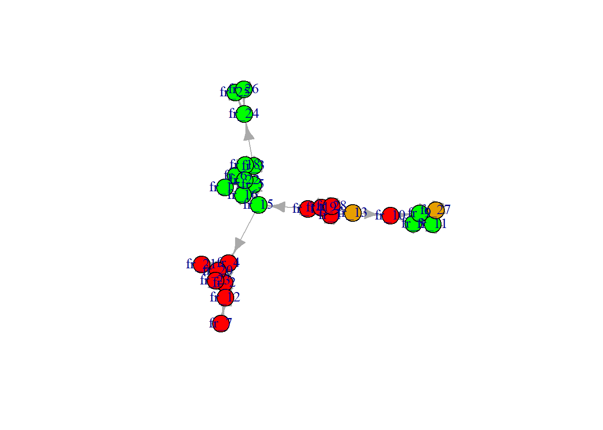
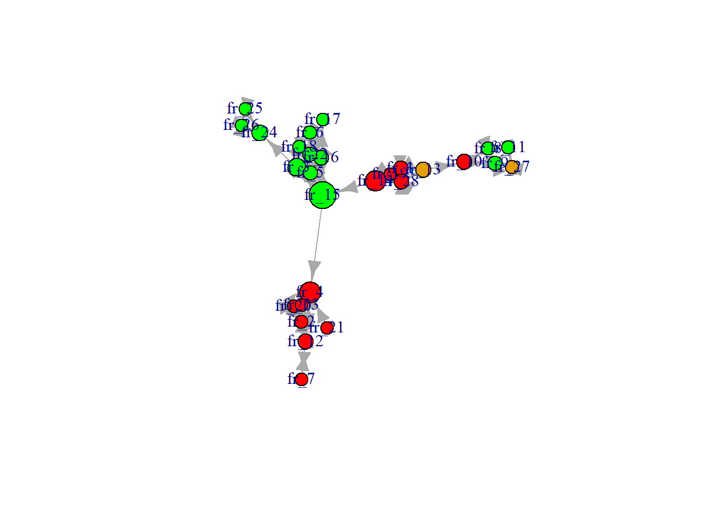
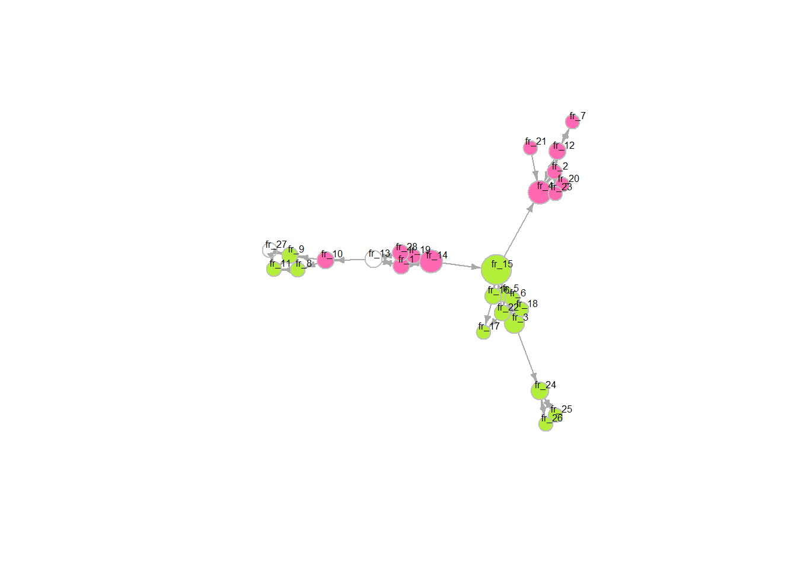
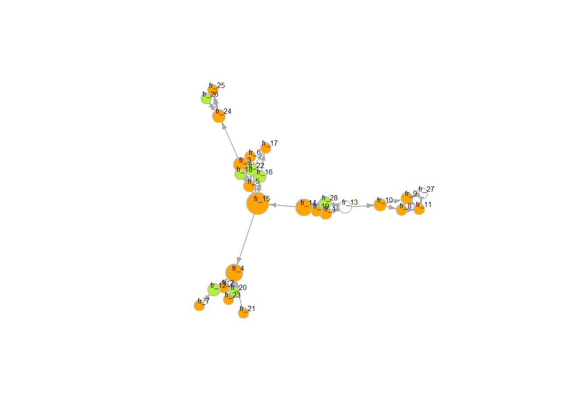

What type of data do I need?
The Nijmegen School Study (TNSS)
Vooroordelen en positief/negatief contact obv etniciteit en gender
‘Hoeveel van je goede vrienden zijn x?’ –> is dit genoeg (compleet) netwerkdata?
Matrix lijkt alleen over pesten, ingevuld door mentoren
Pesten dan als behavioral DV nemen?
The Arnhem School Study (TASS)
FIS data
1/2/3 generation migrants (but maybe too in-group-y?)
Intergroup attitudes based on religion and ethnicity
Other option: Perceived discrimination
Also only based on migration background / ethnicity though
Possibly extend logic of social influence effects to perceived discrimination?
Some literature: https://doi.org/10.1177/21568693241271289, https://doi.org/10.1037/pspi0000426, https://link.springer.com/article/10.1007/s10964-023-01746-1
But: a LOT less literature + it would mean to drop the secondary group thing
MRCS data
Salience of social identity elements
Intergroup contact attitudes (broad!) > “people of other social identities”
Should include:
Context and participants
Waves: how many, what years?
Directed / undirected adjacency matrix
DV and IVs
The dependent variable in the stochastic actor oriented model (SOAM) is the network structure in wave two and three
Ego-level (monadic) covariates: constant/varying
IV: attitudes of ego / students towards [secondary outgroup]
Interaction model? Ego’s attitudes lead to ego’s friendships, but this is conditional on friends’ (from primary outgroup) opinions
Control variables –> structural network effects such as transitivity / triadic closure, reciprocity, inPop, outAct, isolateNet
Corresponding to which effects (i.e. technical names) in the RSiena model?
Descriptive (macro / network level) > What is the diversity in students’ social networks based on [secondary outgroup]?
Explanatory (micro level) > To what extent are secondary out-group attitudes / friendships (diversity in network) explained by social influence effects (vs. secondary transfer effects of intergroup contact)?
What is the primary vs secondary outgroup?
Is the outgroup fixed (e.g. always ‘women’ and ‘ethnic minorities’) or dynamic based on who ego is (e.g. for an ethnic minority woman, the outgroups would be ‘men’ and ‘ethnic majorities’)?
Selection vs. influence no longer possible?
rm(list = ls()) # clean workspace
# custom functions
fpackage.check <- function(packages) {
lapply(packages, FUN = function(x) {
if (!require(x, character.only = TRUE)) {
install.packages(x, dependencies = TRUE)
library(x, character.only = TRUE)
}
})
}
fsave <- function(x, file = NULL, location = "./data/") {
ifelse(!dir.exists("data"), dir.create("data"), FALSE)
ifelse(!dir.exists("data"), dir.create("data"), FALSE)
if (is.null(file))
file = deparse(substitute(x))
datename <- substr(gsub("[:-]", "", Sys.time()), 1, 8)
totalname <- paste(location, datename, file, ".rda", sep = "")
save(x, file = totalname) #need to fix if file is reloaded as input name, not as x.
}
fload <- function(filename) {
load(filename)
get(ls()[ls() != "filename"])
}
fshowdf <- function(x, ...) {
knitr::kable(x, digits = 2, "html", ...) %>%
kableExtra::kable_styling(bootstrap_options = c("striped", "hover")) %>%
kableExtra::scroll_box(width = "100%", height = "300px")
}
packages = c("RSiena", "tidyverse", "stringdist", "stringi")
fpackage.check(packages)## Loading required package: RSiena## Warning: package 'RSiena' was built under R version 4.5.3## Loading required package: tidyverse## Warning: package 'tidyverse' was built under R version 4.5.3## Warning: package 'lubridate' was built under R version 4.5.3## ── Attaching core tidyverse packages ──────────────────────── tidyverse 2.0.0 ──
## ✔ dplyr 1.1.4 ✔ readr 2.1.6
## ✔ forcats 1.0.1 ✔ stringr 1.6.0
## ✔ ggplot2 4.0.0 ✔ tibble 3.3.0
## ✔ lubridate 1.9.5 ✔ tidyr 1.3.1
## ✔ purrr 1.2.0## ── Conflicts ────────────────────────────────────────── tidyverse_conflicts() ──
## ✖ dplyr::filter() masks stats::filter()
## ✖ dplyr::lag() masks stats::lag()
## ℹ Use the conflicted package (<http://conflicted.r-lib.org/>) to force all conflicts to become errors
## Loading required package: stringdist
##
##
## Attaching package: 'stringdist'
##
##
## The following object is masked from 'package:tidyr':
##
## extract
##
##
## Loading required package: stringi## Warning: package 'stringi' was built under R version 4.5.3## [[1]]
## NULL
##
## [[2]]
## NULL
##
## [[3]]
## NULL
##
## [[4]]
## NULLlibrary(haven)
tnss_net <- read_sav("./data/TNSS_wave_2010_mentors.sav")
tnss_pup10 <- read_sav("./data/TNSS_wave_2010_pupils.sav")
tnss_pup11 <- read_sav("./data/TNSS_wave_2011_pupils.sav")
# using 'foreign' I got warnings and didn't seem to load well. 'haven' works nicely
view(tnss_net)
view(tnss_pup10)
view(tnss_pup11) # all looks good
class(tnss_net) # tibble/data frame## [1] "tbl_df" "tbl" "data.frame"class(tnss_pup10)## [1] "tbl_df" "tbl" "data.frame"class(tnss_pup11)## [1] "tbl_df" "tbl" "data.frame"#join datasets
# gaat automatisch goed gelukkig (obv IDClass en IDresp)
tnss <- left_join(tnss_net, tnss_pup10)## Joining with `by = join_by(IDClass, IDresp)`view(tnss)
#selecteer class 5 (of een andere leuke grote klas met weinig missings)
c5 <- tnss %>%
filter(IDClass == 5)
c9 <- tnss %>%
filter(IDClass == 9)
c3 <- tnss %>%
filter(IDClass == 3)
#aantal leerlingen in class 5
max(c5$order) # 28## [1] 28max(c9$order) # 20## [1] 20max(c3$order) # 27## [1] 27#vis het nominatienetwerk er uit. Nu beetje handwerk. Kan vast slimmer.
c5_net <- c5 %>%
select(fr_1:fr_28)
c3_net <- c3 %>%
select(fr_1:fr_28)
view(c5_net)
class(c5_net) # tibble/data frame## [1] "tbl_df" "tbl" "data.frame"require(igraph)## Loading required package: igraph## Warning: package 'igraph' was built under R version 4.5.3##
## Attaching package: 'igraph'## The following objects are masked from 'package:lubridate':
##
## %--%, union## The following objects are masked from 'package:dplyr':
##
## as_data_frame, groups, union## The following objects are masked from 'package:purrr':
##
## compose, simplify## The following object is masked from 'package:tidyr':
##
## crossing## The following object is masked from 'package:tibble':
##
## as_data_frame## The following objects are masked from 'package:stats':
##
## decompose, spectrum## The following object is masked from 'package:base':
##
## uniong1 <- graph_from_adjacency_matrix(as.matrix(c5_net))
#kleur op basis van gender. staat in goede volgorde.
V(g1)$color <- ifelse(c5$gender == 1, "red", "green")
plot(g1)## Warning: vertex attribute color contains NAs. Replacing with default value 1
vcount(g1) # count vertices / actors## [1] 28ecount(g1) # count edges / ties## [1] 82is_bipartite(g1) # is the network unimodal or multi? # F## [1] FALSEis_weighted(g1) # F## [1] FALSErequire(RsienaTwoStep)## Loading required package: RsienaTwoStep## Loading required package: foreach##
## Attaching package: 'foreach'## The following objects are masked from 'package:purrr':
##
## accumulate, whents_recip(g1) # 68## [1] 68ts_outAct(g1) # 6724## [1] 6724ts_inAct(g1) # same number## [1] 6724triad_census(g1)## [1] 2146 290 745 2 3 8 17 18 0 0 24 1 1 0 9
## [16] 12dyad_census(g1)## $mut
## [1] 34
##
## $asym
## [1] 14
##
## $null
## [1] 330# $mut = number of pairs with mutual connections
# $asym = number of pairs with non-mutual connections
# $null = number of pairs with no connections between them
gmat <- as_adjacency_matrix(g1, type = "both", sparse = FALSE)
isSymmetric(gmat) # F, dus directed!## [1] FALSE# transivitity
igraph::transitivity(g1, type = c("localundirected"), isolates = c("NaN", "zero"))## fr_1 fr_2 fr_3 fr_4 fr_5 fr_6 fr_7 fr_8
## 0.6666667 0.6666667 0.5000000 0.2666667 0.6000000 0.3333333 NaN 0.6666667
## fr_9 fr_10 fr_11 fr_12 fr_13 fr_14 fr_15 fr_16
## 0.5000000 0.3333333 0.6666667 0.3333333 0.3333333 0.5000000 0.2666667 0.1666667
## fr_17 fr_18 fr_19 fr_20 fr_21 fr_22 fr_23 fr_24
## 0.0000000 0.6666667 1.0000000 1.0000000 NaN 0.4000000 1.0000000 0.3333333
## fr_25 fr_26 fr_27 fr_28
## 1.0000000 1.0000000 1.0000000 0.6666667# betweenness
igraph::betweenness(g1, directed = T)## fr_1 fr_2 fr_3 fr_4 fr_5 fr_6 fr_7
## 15.500000 4.000000 41.666667 69.000000 11.000000 2.166667 0.000000
## fr_8 fr_9 fr_10 fr_11 fr_12 fr_13 fr_14
## 3.000000 11.500000 20.000000 0.500000 21.000000 20.000000 68.000000
## fr_15 fr_16 fr_17 fr_18 fr_19 fr_20 fr_21
## 122.166667 17.166667 0.000000 4.500000 0.000000 0.000000 0.000000
## fr_22 fr_23 fr_24 fr_25 fr_26 fr_27 fr_28
## 13.333333 0.000000 24.000000 0.000000 0.000000 2.000000 15.500000# Let’s make size proportional to betweenness score:
# changing V
V(g1)$size = betweenness(g1, normalized = T, directed = T) * 60 + 10 #after some trial and error
plot(g1, mode = "directed")## Warning: vertex attribute color contains NAs. Replacing with default value 1
view(tnss_pup10)
# making it prettier
#GENDER
plot(g1 ,
vertex.color = ifelse(c5$gender == 1, "hotpink", "olivedrab2"), # gold = nice color for the vertices
vertex.size = betweenness(g1, normalized = T, directed = T) * 60 + 10, # 20 we'll vertices a bit smaller
vertex.frame.color = "gray", # we'll put a gray frame around vertices
vertex.label.color = "black", # not that ugly blue color for the labels (names)
vertex.label.family = "Helvetica", # not a fan of times new roman in figures
vertex.label.cex = 0.5, # make the label a bit smaller too
vertex.label.dist = 0.8, # we'll pull the labels a bit away from the vertices
edge.curved = 0, # curved edges is always a nice touch
edge.arrow.size = 0.4) # make arrow size (direction of edge) smaller## Warning in text.default(x0, y0, labels = lbl, col = col, family = fam, font =
## fnt, : font family not found in Windows font database
plot(g1 ,
vertex.color = ifelse(c5$ethnicity == 1, "orange", "olivedrab2"), # gold = nice color for the vertices
vertex.size = betweenness(g1, normalized = T, directed = T) * 60 + 10, # 20 we'll vertices a bit smaller
vertex.frame.color = "gray", # we'll put a gray frame around vertices
vertex.label.color = "black", # not that ugly blue color for the labels (names)
vertex.label.family = "Helvetica", # not a fan of times new roman in figures
vertex.label.cex = 0.5, # make the label a bit smaller too
vertex.label.dist = 0.8, # we'll pull the labels a bit away from the vertices
edge.curved = 0, # curved edges is always a nice touch
edge.arrow.size = 0.4) # make arrow size (direction of edge) smaller
What do we see:
A lot of clustering!
It seems strongly based on gender
Also (but less) based on ethnicity
A couple of students with really high levels of betweenness (15, 14, 4, 3) –> connecting the different clusters; brokers / bridges
One very central actor: 15 (male + Dutch origin)
Not much variation among the other students
tbd later
# diag(c5_net) <- 0
length(tnss) #173## [1] 173length(c5_net)## [1] 28# hoe verder, want ik heb maar 1 wave
# tnss_array <- array(data = c(wave1, wave2), dim = c(dim(wave1), 2))
# net <- sienaDependent(tnss_array)
# INDEPENDENT VARIABLE ----------------------------------------------------
# gender
# gender <- as.numeric(c5$gender == "female")
# gender <- coCovar # = constant covariate, kan ook dyad, time varying, etc
# samenvoegen in één data object voor Siena
# mydata <- sienaDataCreate(net, gender)tbd later
# myeff <- getEffects(mydata)
# effectsDocumentation(myeff) # dit zijn alle mogelijke effecten die je kunt opnemen voor dit data object
# ifelse(!dir.exists("results"), dir.create("results"), FALSE)
# print01Report(mydata, modelname = "./results/tnss") # goed bekijken